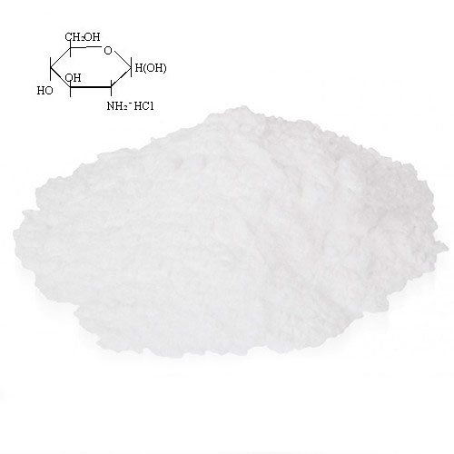
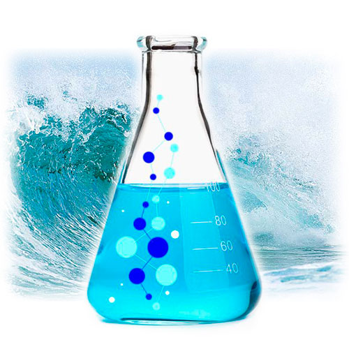

Эффективность и безопасность подтверждена клиническими испытаниями и рекомендациями врачей
100% натуральный продукт, обладающий формулой двойного направленного действия
Снимет боль и отечность
Устраняет воспаление
Останавливает процесс разрушения суставов
Предупреждает осложнение и возможное хирургическое вмешательство
Предупреждает осложнение и возможные хирургические вмешательство и увеличивает объем движений в суставных сочлинениях
Повышает переносимость физических нагрузок
96%эффективности
При клинических испытаниях препарат показал высокую эффективность решения совокупности проблем с суставами и опорно-двигательным аппаратом
Orthodex - уникальный растительный препарат- новейшая разработка украинских ученых. Производство препарата осуществляется с применением нанотехнологий. Ортодекс - средство для суставов, которое избавляет от проблем, а не откладывает их решение.
Orthodex имеет натуральный состав, не содержит синтетических добавок и не имеет побочных эффектов. Клинически доказано, что препарат высокоэффективен для пациентов Страдающих различными болезнями опорнодвигательного аппарата.
Orthodex устраняет проблему, а не маскирует ее симптомы. Уже за 1 курс применения Ортодекс запускает регенерацию ваших суставов.
Эффективность и безопасность подтверждена клиническими испытаниями и рекомендациями врачей
100% натуральный продукт, обладающий формулой двойного направленного действия
Orthodex - первый в Украине продукт содержащий запатентованый состав натуральных компонентов направленно воздействующих на причину возникновения проблем с суставами. Их эффективное действие подтверждено современными научными исследованиями в Украине и за рубежом.
Сбалансированные фито-компоненты - Сабельник (волчье тело), кора вербы козьей, цветы бузины сибирской, соцветия конского каштана, корень лопуха, корень живокоста, корневище пырея, листья бобовника трилистного и др.Эти растения издавна привлекали внимание традиционной медицины как перспективные средства для лечения костно-суставных заболеваний (ревматоидный артрит, артроз, подагра, остеохондроз, межпозвоночные грыжи, радикулит, полиартрит.
Глюкозамин гидрохлорид - Вырабатывается из хитина морских животных (креветок, лобстеров или крабов) способом глубокого гидролиза (деполимеризации). Применение глюкозамина способствует значительному уменьшению болей и улучшению двигательной способности суставов, а так же способствует формированию слизистой оболочки, применяется при лечении язв. Активная роль глюкозамина в формировании хрящевой ткани и продуцировании синовиальной жидкости, его противовоспалительные свойства и полная безвредность позволяют широко использовать производные глюкозамина.
Хондроитин - хондроитин форме сульфата, а именно такой используется в Orthodex, обладает тропностью к хрящевой ткани, инициирует процесс фиксации серы в процессе синтеза хондроитин-серной кислоты, что, в свою очередь, способствует отложению кальция в костях. Стимулирует синтез гиалуроновой кислоты, укрепляя соединительнотканные структуры: хряща, сухожилий, связок. Оказывает анальгетическое и противовоспалительное действие, является хондропротектором, способствует активной регенерации хряща.
Коллаген морской в запатентованной формуле обеспечивает костной ткани жесткость и крепость, сопротивление растяжению, для хрящевой ткани – эластичность и сопротивление сдавливанию, для кожи – эластичность и упругость, для мембран – это проницаемость, для сосудов – гибкость и растяжимость во всех направлениях. Коллаген также служит строительным материалом для клеток хряща, помогает восстановить поврежденные ткани и создавать новые
СЕРТИФИКАЦИЯ И КЛИНИЧЕСКИЕ ИССЛЕДОВАНИЯ В январе 2017г. НИИ травматологии и ортопедии НАМН Украины успешно провел клинические исследования препарата ORTHODEX/ Результаты показали превосходство этого препарата над ближайшими конкурентами в 9-17 раз.
Общее состояние наших пациентов заметно улучшается, что подтверждается клиническими исследованиями препарата.
Сегодня огромное количество лекарственных средств, предназначенных для профилактики и лечения проблем опорно-двигательного аппарата не помогают суставам выздоравливать. Они снимают боль, но состояние суставов продолжает ухудшаться.
Помимо этого, подавляющее большинство существующих на рынке препаратов, перенасыщены красителями и консервантами, вызывающими аллергические реакции.
Препарат ORTHODEX (ОРТОДЕКС) - выгодно отличается от других средств. Натуральный состав, мощный терапевтический эффект, запатентованная формула, наличие сертификации и проведенные клинические исследования позволяют рекомендовать ORTHODEX для приема лицам, страдающим заболеваниями опорно-двигательного аппарата. ОРТОДЕКС - системно восстанавливает суставы, снимая боль и возвращая подвижность.
За 1 курс сустав возвращает свою функциональность.
О КОМПАНИИ
Адрес производства: Украина, г.Киев, проул. Балтийский, 23, тел: +38 (068) 071-94-49, E-Mail: info.orthodex@gmail.com
Наша компания и занимается разработкой и производством препаратов для решения проблем опорно-двигательного аппарата с 2013 года.
Мы тесно сотрудничаем с ведущими специалистами в области ортопедии Украины и Европы.
- Orthodex - решает 2 основных проблемы суставов: защищает от разрушения и запускает восстановление.
- Orthodex – Предотвращает боль после 4-х применений. Снимает воспаление суставов и запускает регенерацию хрящевой ткани.
Мнение специалиста
Я все чаще рекомендую Orthodex при лечении типичных заболеваний суставов. Большинство обратившихся ко мне долгое время не лечат болезнь, устраняя боль мазями. Но это облегчение - временное. От такого “лечения” болезнь не уходит, а выздоровление случается редко и благодаря внутренним ресурсам больных.
Своим коллегам я рекомендую использовать Orthodex во врачебной практике. Большинство ко мне прислушивается, особенно когда осознают потенциал состава этого препарата. В основе Orthodex — сочетание натуральных компонентов, включая Хондроитин, глюкозамин, коллаген и еще 20 эффективнейших фитокомпонентов. Они содержат восстанавливающие вещества, которые усваиваются за 2 часа, а не за месяц, как в других хондропротекторах! Ортодекс хорошо подходит еще и для пациентов старшего возраста, у которых регенерация суставов протекает медленнее. Препарат запускает процессы обновления суставов, благодаря чему они изнашиваются медленнее, и потому не воспаляются и не болят. Но для пациентов куда важнее не состав, а эффективность препарата. Эффективность Orthodex впечатляет: в 2017 году я назначила его 1283 из 1430 пациентов. Из них по окончанию курса полностью избавились от проблем с суставами 1044 из 1283 пациентов. То есть, 81% пациентов, принимавших Ортодекс, полностью избавились от проблем с суставами. Остальные значительно улучшили свое состояние.
Эффективность и безопасность подтверждена клиническими испытаниями и рекомендациями врачей.
100% натуральный продукт, обладающий формулой двойного направленного действия
* Результаты могут отличаться, так как зависят от индивидуальных особенностей организма и заболевания.
Перед применением следует обязательно проконсультироваться с врачем.
ОТЗЫВЫ О ПРЕПЕРАТЕ ORTHODEX
Порядок работы
Вы вводите свои данные в форму заявки на нашем сайте и отправляете заказ
Наш специалист связывается с Вами и уточняет все детали
Мы отправляем заказ Новой Почтой в любую точку Украины
Эффективность и безопасность подтверждена клиническими испытаниями и рекомендациями врачей
100% натуральный продукт, обладающий формулой двойного направленного действия